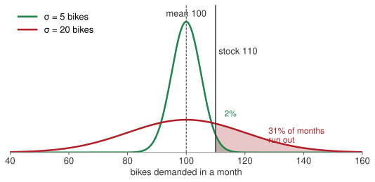
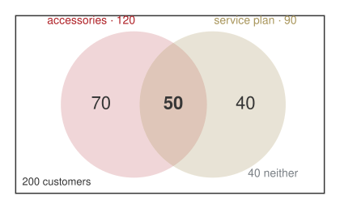

The founder does not know the numbers
Week 7 · Monday 9 November 2026 · 10:00–13:00
MBA03 Research & Quantitative Business Methods · European School of Economics, Florence
Who I am

Vincenzo Nardelli, PhD · Assistant Professor · Founder, Intuo and Geotobler
- Economics, then MSc Statistical Sciences, Università Cattolica
- PhD, Statistics and Data Science, Milano-Bicocca
- Visiting Scholar, Center for Spatial Data Science, University of Chicago, and Brunel University of London
- Assistant Professor, Università Cattolica, Rome: spatial statistics and econometrics; teaches Statistics, Coding, Big Data
- Founder, Intuo (AI consulting) and Geotobler (geospatial AI, SaaS)
Weeks 1–5: every number was known
| Arno Bikes, so far | |
|---|---|
| Fixed cost | €60,000 a month |
| Variable cost | €400 a bike |
| List price | €1,000 a bike |
| Break-even | 100 bikes a month |
| Cost of capital | 9% a year |
| The bond it bought | 4% coupon, 5 years |
Every one of these was given. You solved for the rest.
Weeks 7–10: the same firm, and the founder does not know the numbers.
- How many customers next month?
- How many bikes come back under warranty?
- How far does a battery really go?
- Which supplier sent the faulty batch?
A number she does not know is not a number she can ignore. It is a number with a spread.
Planning on the average, and running out

Demand averages 100 bikes a month. The founder stocks 110 — “ten more than average, we are safe”.
Same average, two very different months.
If demand moves by about 5 bikes, she runs out in 2% of months. If it moves by about 20, she runs out one month in three.
The mean was never the problem. The spread is. For the spread we need the variance — and the rest of today.
Where the four weeks go
| Wk | Date | What you will be able to do by hand |
|---|---|---|
| 7 | 9 Nov · in person | count, condition, update; mean and spread; binomial, Poisson, normal |
| 8 | 16 Nov | how sure are we of a number: confidence intervals, tests, one regression line |
| 9 | 23 Nov | several causes at once; a trend through time |
| 10 | 30 Nov | review; one last round of practice on paper |
One case, four Mondays. Arno Bikes, the firm from weeks 1–5. Every number you see from now on is one of its numbers.
Today is the only day we meet in this room. Paper, a calculator, and the normal table — or NORM.S.DIST on your phone.
Every technique in this room is here because an assessment asks for it. I will tell you which one, every time.
How today runs
10:00 · 10’The bridgeFrom certain numbers to uncertain ones.
10:10 → 12:35Four questions from the founderEach one: her question and your bet on paper → the picture → one formula with a number → the sentence for the Board. Break at 11:10.
12:35 · 15’Take homeFour lines to remember, the four answers for the founder, the homework.
Next MondayRemoteHow sure are we of that number?
Bets are written, not said. Write a number before I compute; the surprise is where the learning is.
The case: Arno Bikes, this quarter
| e-bike assembler, Florence | |
| Customers last quarter | 200 |
| Batteries bought last month | 1,000, from two suppliers |
| Returns under warranty | about 5 a week |
| Helpline | about 3 calls an hour |
| Battery range, as measured | 90 km on average, give or take 8 |
None of these is a fixed cost or a list price. Each one moves.
Four questions from the founder
Block AHow many of our customers do both?sets · the addition law · counting
Block BWhich supplier sent the faulty batteries?conditional probability · Bayes
Block CHow many returns next week?mean and variance · binomial · Poisson
Block DWhat range do we promise?the normal
Block A · sets, the addition law, counting How many of our customers do both?
Sets: six words, with Arno Bikes next to each
| word | in plain words | at Arno Bikes |
|---|---|---|
| set | a collection of things, listed or described | the 200 customers of last quarter |
| subset | a set wholly inside another | the ones who bought accessories |
| universal set | everything we are talking about | all 200 customers |
| complement | everything in the universal set not in A | the customers who did not buy accessories |
| intersection A \cap B | in A and in B | bought accessories and a service plan |
| union A \cup B | in A or in B, or both | bought at least one of the two |
A definition is one sentence a non-mathematician can read. “The set of customers that…”, never a symbol alone.
Venn diagram: 200 customers, who bought both?
The founder’s CRM says: 120 bought accessories, 90 bought a service plan, 40 bought neither.
She wants to upsell the ones who bought both. How many are they?
Bet before we compute
Write a number. Is it more or fewer than 30?

Bought at least one: 200 - 40 = 160. Then 120 + 90 = 210 counts the “both” customers twice:
n(A \cup S) = n(A) + n(S) - n(A \cap S)
160 = 120 + 90 - \text{both} \;\Rightarrow\; \text{both} = \textbf{50}
The addition law: divide every count by 200
Probability is a long-run share. Of the last 200 customers, 50 bought both: pick one at random and
P(\text{both}) = \frac{50}{200} = .25
The same identity, divided by N, is the addition law:
P(A \cup S) = P(A) + P(S) - P(A \cap S)
= .60 + .45 - .25 = \textbf{.80}
Eight customers in ten bought at least one of the two.
| count | share | |
|---|---|---|
| accessories only | 70 | .35 |
| both | 50 | .25 |
| service plan only | 40 | .20 |
| neither | 40 | .20 |
| total | 200 | 1.00 |
Shares are never negative and add to 1. The complement is 1 - .80 = .20: the “neither” row.
Board sentence
Eighty per cent of our customers buy at least one extra; a quarter buy both. “Or” adds the two shares, then takes the overlap out once.
Three of eight for the trade fair: pick them one at a time
Combinations: a team of three, order does not matter
Eight people work at Arno Bikes. The founder sends three to the Milan trade fair.
Bet before we compute
How many different teams of three? More or fewer than 100?
A team is a team: Anna, Luca, Sara is the same team as Sara, Anna, Luca.
\binom{8}{3} = \frac{8!}{3!\,(8-3)!}
- \binom{8}{3} reads “8 choose 3”: the number of groups of 3 you can pick from 8.
- n! reads “n factorial”: n \cdot (n-1) \cdot (n-2) \cdots 1, the ways to line up n people. 3! = 6, 8! = 40{,}320.
Never compute the big factorials. Cancel first:
\frac{8!}{3!\,5!} = \frac{8 \cdot 7 \cdot 6 \cdot \cancel{5!}}{3! \cdot \cancel{5!}} = \frac{8 \cdot 7 \cdot 6}{3 \cdot 2 \cdot 1} = \frac{336}{6} = \textbf{56}
Fifty-six teams. The bottom of the fraction, 3!, removes the orderings that do not count.
Permutations: three named roles, order matters
Now the three have named roles: stand lead, demo rider, sales.
Anna as lead and Luca as rider is not the same as Luca as lead and Anna as rider. Swapping two people changes the outcome.
P^{8}_{3} = \frac{8!}{(8-3)!} = \frac{8!}{5!} = 8 \cdot 7 \cdot 6 = \textbf{336}
Three decisions in a row: 8 choices for lead, 7 left for rider, 6 for sales.
| formula | result | |
|---|---|---|
| teams (combinations) | \dfrac{8!}{3!\,5!} | 56 |
| roles (permutations) | \dfrac{8!}{5!} | 336 |
| ratio | 3! = 6 |
Each team of three can be arranged in 3! = 6 ways: 56 \times 6 = 336.
One question decides which formula: does swapping two people change the outcome? No: combinations. Yes: permutations.
Four questions from the founder
Block AHow many of our customers do both?sets · the addition law · counting
Block BWhich supplier sent the faulty batteries?conditional probability · Bayes
Block CHow many returns next week?mean and variance · binomial · Poisson
Block DWhat range do we promise?the normal
Block B · conditional probability and Bayes Which supplier sent the faulty batteries?
Two-way table: a faulty battery is on the bench
Last month Arno Bikes bought 1,000 batteries from two suppliers.
- Volta sent 700. Its defect rate is 2%.
- Ampere sent 300. Its defect rate is 5%.
A faulty battery is on the bench. The label has fallen off.
Bet before we compute
Which supplier is it most likely from? Write the name and a share.
Build the table from the three facts.
- Volta: 700 \times 2\% = 14 faulty, 700 - 14 = 686 good
- Ampere: 300 \times 5\% = 15 faulty, 300 - 15 = 285 good
- Totals: 29 faulty, 971 good, 1{,}000 batteries
| good | faulty | total | |
|---|---|---|---|
| Volta | 686 | 14 | 700 |
| Ampere | 285 | 15 | 300 |
| total | 971 | 29 | 1,000 |
Conditional probability: a cell over a total
P(A \mid B) = \frac{\text{number in both } A \text{ and } B}{\text{number in } B}
“Given B” means: look only at B’s row (or column), and ask what share of it is A. Everything else in the table is ignored.
Same cell, 14, on top.
Given Volta, faulty? Look only at Volta’s row, 700 batteries:
P(F \mid \text{Volta}) = \frac{14}{700} = \textbf{.02}
Given faulty, Volta? Look only at the faulty column, 29 batteries:
P(\text{Volta} \mid F) = \frac{14}{29} = \textbf{.48}
Two different questions, two different totals underneath. Say which total before you divide.
Conditional probability, the row: given the supplier, how often faulty?
| good | faulty | total | share faulty | |
|---|---|---|---|---|
| Volta | 686 | 14 | 700 | .02 |
| Ampere | 285 | 15 | 300 | .05 |
| total | 971 | 29 | 1,000 | .029 |
P(F \mid \text{Volta}) = \frac{14}{700} = \textbf{.02}
P(F \mid \text{Ampere}) = \frac{15}{300} = \textbf{.05}
These are the defect rates we started from. Reading the rows gives nothing new, and that is the point: it confirms the table is built right.
Overall, P(F) = 29/1{,}000 = .029: between the two, closer to Volta’s because Volta sends more.
Conditional probability, the column: given faulty, which supplier?
| good | faulty | share of the faulty | |
|---|---|---|---|
| Volta | 686 | 14 | .48 |
| Ampere | 285 | 15 | .52 |
| total | 971 | 29 | 1.00 |
P(\text{Volta} \mid F) = \frac{14}{29} = \textbf{.48}
P(\text{Ampere} \mid F) = \frac{15}{29} = \textbf{.52}
Most batteries come from Volta. Most faulty batteries come from Ampere, just: a higher defect rate on a smaller volume.
Board sentence
The faulty battery is slightly more likely from Ampere, 52 to 48. Audit Ampere’s line, but do not switch supplier on one battery.
Independence: compare the rows
Supplier and fault are independent if knowing the supplier does not change the share of faulty: every row shows the same share as the total.
| share faulty | ||
|---|---|---|
| Volta | .02 | |
| Ampere | .05 | |
| overall | .029 |
The rows differ. Knowing the supplier does change the share: supplier and fault are dependent.
Had both rows read .029, the supplier would tell you nothing about the fault, and the two-way table would be a waste of paper.
Compare the rows, then say the word. “Independent” without the comparison is a guess.
Bayes: the column, with shares instead of counts
The founder’s prior: “probably Volta, they send 70%”. One faulty battery is the evidence. Update in three columns:
| supplier | prior share | × defect rate | = faulty, as a share of all | ÷ total faulty |
|---|---|---|---|---|
| Volta | .70 | .02 | .014 | .014 / .029 = .48 |
| Ampere | .30 | .05 | .015 | .015 / .029 = .52 |
| total | 1.00 | .029 | 1.00 |
This is the faulty column of the table, in shares. The formula is the same table in symbols:
P(\text{Ampere} \mid F) = \frac{P(F \mid \text{Ampere})\,P(\text{Ampere})}{P(F)} = \frac{.05 \times .30}{.029} = \textbf{.52}
Before the evidence Ampere was .30; after, .52. A 30% supplier at twice the defect rate is only a coin-flip suspect.
Four questions from the founder
Block AHow many of our customers do both?sets · the addition law · counting
Block BWhich supplier sent the faulty batteries?conditional probability · Bayes
Block CHow many returns next week?mean and variance · binomial · Poisson
Block DWhat range do we promise?the normal
Block C · mean and variance, binomial, Poisson How many returns next week?
Mean and variance: five weeks of returns, by hand
| week | returns x | x - \bar{x} | (x - \bar{x})^{2} |
|---|---|---|---|
| 1 | 4 | −1 | 1 |
| 2 | 7 | 2 | 4 |
| 3 | 3 | −2 | 4 |
| 4 | 6 | 1 | 1 |
| 5 | 5 | 0 | 0 |
| sum | 25 | 0 | 10 |
The mean: the total, shared equally.
\bar{x} = \frac{\sum x}{n} = \frac{25}{5} = \textbf{5 returns a week}
The variance: the average squared distance from the mean. Why n - 1 underneath? The five distances always add to zero, so once four are known the fifth is fixed: only four of them are free. Dividing by 5 would make the spread look smaller than it is.
s^{2} = \frac{\sum (x - \bar{x})^{2}}{n - 1} = \frac{10}{4} = 2.5 \qquad s = \sqrt{2.5} = \textbf{1.58}
Reading. A typical week is 5 returns, give or take about 1.6. The deviations always sum to zero — a check, not a result.
Five weeks of returns: the distances cancel, the squares do not
Random variable: next week’s returns, a number with its shares
Twenty weeks of history, turned into shares: in 3 of 20 weeks there were 3 returns, in 4 of 20 there were 4, and so on.
| returns x | share P(x) |
|---|---|
| 3 | .15 |
| 4 | .20 |
| 5 | .30 |
| 6 | .20 |
| 7 | .15 |
| sum | 1.00 |
A random variable is next week’s number, before we see it, with a share attached to each value it can take. The shares add up to 1.
The expected value is the mean of the five-row table with the shares as weights: each value, times how often it happens, added up.
E(x) = \sum x\,P(x)
= 3(.15) + 4(.20) + 5(.30) + 6(.20) + 7(.15)
= .45 + .80 + 1.50 + 1.20 + 1.05 = \textbf{5.0}
Reading. Expect 5 returns a week. No single week has exactly 5.0; over 50 weeks, about 250.
Variance of a random variable: how far from 5?
| returns x | share P(x) | distance x - \mu | squared (x - \mu)^{2} | weighted (x - \mu)^{2}\,P(x) |
|---|---|---|---|---|
| 3 | .15 | −2 | 4 | 4 × .15 = .60 |
| 4 | .20 | −1 | 1 | 1 × .20 = .20 |
| 5 | .30 | 0 | 0 | 0 × .30 = 0 |
| 6 | .20 | 1 | 1 | 1 × .20 = .20 |
| 7 | .15 | 2 | 4 | 4 × .15 = .60 |
| sum | 1.00 | 1.60 |
Same recipe as the five weeks: distance from the mean, squared, then averaged, with the shares as weights.
\sigma^{2} = \sum (x - \mu)^{2}\,P(x) = \textbf{1.60}
\sigma = \sqrt{1.60} = \textbf{1.26}
Reading. Expect 5 returns, give or take about 1.3.
Same two formulas as the five weeks: once with 1/n as the weight, once with the shares.
Binomial: twelve test rides, how many buy?
Saturday: 12 test rides. From the CRM, one rider in four buys: p = .25, and each decides alone.
Bet before we compute
How many buyers is most likely? And the chance of exactly 3?
The binomial: a fixed number n of yes/no trials, the same p each time, independent.
P(x) = \binom{n}{x}\, p^{x}\, (1-p)^{n-x}
- \binom{n}{x}: the ways to pick which x of the n riders buy
- p^{x}: those x all buy
- (1-p)^{n-x}: the other n - x all do not

The shape for n = 12, p = .25: the bar at 3 is the tallest.
Binomial: exactly 3 buyers out of 12, the steps
1. The ways to pick which 3 buy.
\binom{12}{3} = \frac{12 \cdot 11 \cdot 10}{3 \cdot 2 \cdot 1} = \frac{1320}{6} = 220
2. Those 3 buy. \;p^{3} = .25^{3} = .25 \times .25 \times .25 = .015625
3. The other 9 do not. \;(1-p)^{9} = .75^{9} = .0751
4. Multiply.
P(3) = 220 \times .015625 \times .0751 = \textbf{.258}
Reading. One Saturday in four ends with exactly three buyers.
The mean, with no table at all:
np = 12 \times .25 = \textbf{3 buyers}
\sigma = \sqrt{np(1-p)} = \sqrt{12 \times .25 \times .75}
= \sqrt{2.25} = \textbf{1.5}
Nobody buys: x = 0, so \binom{12}{0} = 1, p^{0} = 1:
P(0) = .75^{12} = .032
At least one buys: 1 - P(0) = 1 - .032 = \textbf{.968}
Every binomial question is these four steps. “At least one” is always 1 minus “none”.
Try it: move the number of test rides and the share who buy
Push n to 40 and watch the bars become a bell. Drop p to .05: where does the peak go, and what shape is left?
Poisson: the helpline, three calls an hour
Calls arrive at random, 3 an hour on average. One person answers; she steps out for half an hour.
Bet before we compute
Chance that nobody calls in that half hour? Write a share.
The Poisson: a count in an interval, constant rate, no upper limit. Write \mu = rate × interval before any number.
Half an hour: \mu = 3 \times \tfrac{1}{2} = 1.5.
P(x) = \frac{\mu^{x} e^{-\mu}}{x!} \;\Rightarrow\; P(0) = \frac{1.5^{0} e^{-1.5}}{0!} = e^{-1.5} = \textbf{.223}
In a full hour, \mu = 3:
P(0) = e^{-3} = .050
P(\ge 1) = 1 - .050 = \textbf{.950}
P(2) = \frac{3^{2} e^{-3}}{2!} = \frac{9 \times .0498}{2} = .224
Without the rescaling you would say 5% for the half hour. It is 22%: four times out. \mu first, always.
Calls arrive at random, and the hours pile into a shape
Binomial or Poisson? Decide in words before you compute
Binomial — how many of these n?
- a fixed number of trials, each yes or no
- the same p every time, each trial alone
- the count cannot exceed n
- you are given n and p
12 test rides, one in four buys.
Poisson — how many in this interval?
- events arriving over time or space
- a constant rate, arrivals independent
- no ceiling on the count
- you are given a rate; \mu = rate × interval
3 calls an hour; a half hour means \mu = 1.5.
Board sentence
Of twelve test rides we expect three sales, and nobody buying is a one-in-thirty Saturday. Leaving the helpline for half an hour, we miss at least one call three times out of four.
Four questions from the founder
Block AHow many of our customers do both?sets · the addition law · counting
Block BWhich supplier sent the faulty batteries?conditional probability · Bayes
Block CHow many returns next week?mean and variance · binomial · Poisson
Block DWhat range do we promise?the normal
Block D · the normal What range do we promise?
The normal: two hundred bikes on the same loop
Marketing wants a number on the box: “range X km”. Engineering measured 200 bikes on the same loop: 90 km on average, standard deviation 8 km.
Range is not a count. It is a measurement, any value on a line, and the bikes pile up into a bell: most near 90, fewer and fewer further out, symmetric.
Bet before we compute
Print 75 km: what share of riders will see less than the box promised? Write a share.
The normal, in words:
- continuous, bell-shaped, symmetric
- two numbers fix it: \mu the centre, \sigma the width
- mean = median = mode; skewness zero
- a probability is an area under the curve; a single value has none
X \sim N(90,\, 8)
Two hundred battery ranges pile into a bell
The empirical rule: one σ, two σ, three σ

Count in units of \sigma from the centre:
- 68% within one σ: 82 to 98 km
- 95% within two σ: 74 to 106 km
- 99.7% within three σ: 66 to 114 km
A bike at 74 km is two σ below the mean — one in forty does that badly.
The same three numbers for every bell. That is why we measure distance in σ and not in km.
The normal: four steps, every time
1Sketch and shadeDraw the bell, mark \mu, mark x, shade the area the question asks for.
2Standardisez = (x - \mu)/\sigma: how many σ from the centre, and on which side.
3TableThe standard normal table gives the area to the left of z. Or NORM.S.DIST(z, TRUE).
4SentenceTurn the area back into bikes, riders, euros.
One table serves every bell, because step 2 turns every bell into the same one: centre 0, width 1.
Standardise: steps 1 and 2, the share below 75 km

Step 1. The shaded area is the question: riders who see less than 75 km.
Step 2. Standardise. 75 km is 15 km below the mean of 90. In units of σ = 8:
z = \frac{x - \mu}{\sigma} = \frac{75 - 90}{8} = \frac{-15}{8} = -1.875 \approx \textbf{-1.88}
Reading. 75 km sits 1.88 standard deviations below the centre. The minus sign says “below”; the 1.88 says “how far”.
Same picture for a bike at 74 km from the previous slide: z = -2, two σ below. Now we can do any value, not only whole σ.
The normal table: steps 3 and 4, then the sentence
Step 3. The table splits z in two: the row is z to one decimal, the column adds the second. -1.88 = -1.8 + .08: row -1.8, column .08. The entry is the area to the left of z.
| z | .00 | .04 | .05 | .08 |
|---|---|---|---|---|
| −2.0 | .0228 | .0207 | .0202 | .0188 |
| −1.9 | .0287 | .0262 | .0256 | .0239 |
| −1.8 | .0359 | .0329 | .0322 | .0301 |
| −1.7 | .0446 | .0409 | .0401 | .0375 |
| −1.6 | .0548 | .0505 | .0495 | .0465 |
An excerpt of the standard normal table (areas to the left of z). In Excel: =NORM.S.DIST(-1.88, TRUE) → .0301.
P(X < 75) = P(z < -1.88) = \textbf{.030}
Step 4. Sentence. Print 75 km and three riders in a hundred will see less than the box promised.
Want the share above 75 km? The whole area is 1:
P(X > 75) = 1 - .030 = .970
The table only gives “to the left”. Everything else is 1 minus, or a difference of two lookups. The sketch tells you which.
Try it: move the mean, the spread and the threshold
Double \sigma to 16: what happens to the 75-km tail? Then flip the toggle and ask the app for the threshold that leaves 5% below.
The normal, backwards: the guarantee
The Board accepts 5% of riders seeing less than the box. What do we print?
Now the area is given and x is wanted: the four steps, backwards.
Table, backwards. Find .05 inside the table: between z = -1.64 (.0505) and -1.65 (.0495), so z = -1.645. Excel: =NORM.S.INV(0.05).
Undo the standardisation, solving z = (x - \mu)/\sigma for x:
x = \mu + z\,\sigma = 90 - 1.645 \times 8 = \textbf{76.8 km}
Print 76 km, a promise rounds down: the share below it is P(z < -1.75) = .040.
Forwards: x \to z \to area. Backwards: area \to z \to x.
| share who see less | |
|---|---|
| 85 km | 27% |
| 80 km | 11% |
| 76.8 km | 5% |
| 75 km | 3% |
Board sentence
Print 76 km. About one rider in twenty-five will see less, and every km we add to the box adds one or two complaints in a hundred.
Skewness: when the bell is the wrong picture

Battery range is symmetric: skewness zero, mean and median coincide.
Delivery time is not: most parcels take two days, a few take ten. A long right tail pulls the mean above the median: positive skewness.
Before you use the table, ask whether the data are a bell. A mean above the median says they are not.
One family, three shapes: what changes as n and p move
One family, three shapes: in words
| from | to | when | in Arno Bikes words |
|---|---|---|---|
| Binomial | Poisson | many trials, each one rare | thousands of riders a week, a handful of complaints |
| Binomial | Normal | many trials, p not tiny | buyers among all Saturday visitors of the year |
| Poisson | Normal | a high rate | calls over a whole week, not one hour |
Twelve rides stay binomial. Count the buyers among all Saturday visitors of the year, or calls over a whole week, and the bars smooth into a bell: with enough trials, every count behaves like a measurement.
Small n: count the ways. Rare events at a rate: Poisson. Large numbers of anything: the bell you have just learnt to read.
Close Take home
Take home
A“Or” and “given”“Or” adds the two shares and takes the overlap out once. “Given” means: look only at that row or column, and divide by its total.
BCount the waysOrder matters: multiply down the tree. Order does not: divide by k!. A supplier’s share, times its defect rate, is its share of the faulty.
CExpect np, give or takeYes/no trials: binomial, mean np. Events at a rate: Poisson, mean rate × interval. “At least one” is always 1 − “none”.
DA normal question is an areaSketch, standardise, table, sentence. Backwards for a guarantee: area → z → x.
The mean was never the problem. The spread is: that is why every answer today came with a “give or take”.
Four answers for the founder
AHow many customers do both?Eighty per cent buy at least one extra; a quarter buy both.
BWhich supplier sent the faulty battery?Slightly more likely Ampere, 52 to 48. Audit the line, do not switch supplier on one battery.
CHow many returns next week?Five, give or take one and a half. Twelve test rides: three sales expected, nobody buying is a one-in-thirty Saturday.
DWhat range do we print?76 km. One rider in twenty-five sees less; every km added to the box adds one or two complaints in a hundred.
Homework 7 (homework.md), due Sunday 15 November, 23:59 on Moodle: five exercises on paper + a 150–250-word memo to the Board on the range to print. Corrected together at the start of next Monday. If you want more: Anderson et al., the probability chapters, not required.
Next Monday, online: how sure are we of that number? 200 bikes gave 90 km. The true average is not 90. Week 8 says how far off it can be.
Formulas, on one page: the ten we used
| question | formula | this morning |
|---|---|---|
| at least one of two | P(A \cup B) = P(A) + P(B) - P(A \cap B) | .60 + .45 - .25 = .80 |
| teams, order irrelevant | \binom{n}{k} = \dfrac{n!}{k!\,(n-k)!} | \binom{8}{3} = 56 |
| roles, order matters | P^{n}_{k} = \dfrac{n!}{(n-k)!} | 8 \cdot 7 \cdot 6 = 336 |
| given | P(A \mid B) = \dfrac{\text{both}}{\text{total of } B} | 14 / 700 = .02, 14 / 29 = .48 |
| update on evidence | P(A \mid B) = \dfrac{P(B \mid A)\,P(A)}{P(B)} | .05 \times .30 / .029 = .52 |
| mean and spread of a list | \bar{x} = \dfrac{\sum x}{n}, \quad s^{2} = \dfrac{\sum (x-\bar{x})^{2}}{n-1} | 5, \sqrt{2.5} = 1.58 |
| mean and spread with shares | E(x) = \sum x\,P(x), \quad \sigma^{2} = \sum (x-\mu)^{2} P(x) | 5.0, \sqrt{1.60} = 1.26 |
| yes/no trials | P(x) = \binom{n}{x} p^{x} (1-p)^{n-x}, \quad E = np | P(3) = .258, np = 3 |
| events at a rate | P(x) = \dfrac{\mu^{x} e^{-\mu}}{x!}, \quad \mu = \text{rate} \times \text{interval} | P(0) = e^{-3} = .050 |
| a share under the bell | z = \dfrac{x - \mu}{\sigma}, table; backwards x = \mu + z\,\sigma | z = -1.88 \to .030; 90 - 1.645 \times 8 = 76.8 |
Ten lines. None of them was the hard part. The hard part was saying which one.
← Course site · Research & Quantitative Business Methods · ESE Florence